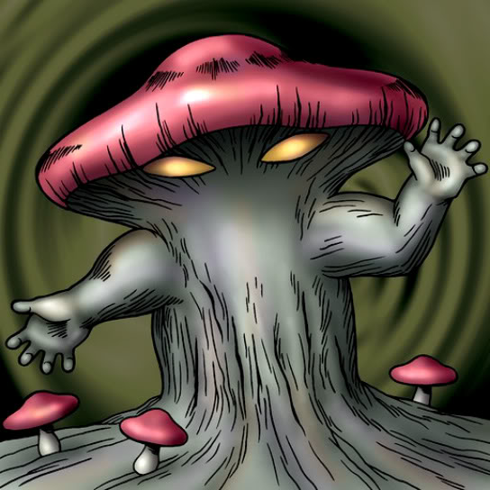

Mushroom Man

Description: "When this card is flipped face-up, the power of all Mushroom Man #2 cards are increased by 500 points."
STATS
ATK: 800
DEF: 600DECK COST
Deck Cost per Card: 19EFFECT NOT IMPLEMENTED
Fusion List (43 Possible Fusions)
- Mushroom Man + Air Marmot of Nefariousness = Flower Wolf
- Mushroom Man + Armaill = Bean Soldier
- Mushroom Man + Armored Zombie = Pumpking the King of Ghosts
- Mushroom Man + Blue-Eyed Silver Zombie = Wood Remains
- Mushroom Man + Bone Mouse = Wood Remains
- Mushroom Man + Burglar = Flower Wolf
- Mushroom Man + Clown Zombie = Pumpking the King of Ghosts
- Mushroom Man + Crawling Dragon #2 = B. Dragon Jungle King
- Mushroom Man + Dancing Elf = Queen of Autumn Leaves
- Mushroom Man + Dragon Zombie = Pumpking the King of Ghosts
- Mushroom Man + Fiend's Hand = Wood Remains
- Mushroom Man + Fire Reaper = Wood Remains
- Mushroom Man + Flame Ghost = Pumpking the King of Ghosts
- Mushroom Man + Graveyard and the Hand of Invitation = Wood Remains
- Mushroom Man + Guardian of the Labyrinth = Bean Soldier
- Mushroom Man + Kagemusha of the Blue Flame = Bean Soldier
- Mushroom Man + Key Mace = Queen of Autumn Leaves
- Mushroom Man + Kuriboh = Rose Spectre of Dunn
- Mushroom Man + Lesser Dragon = B. Dragon Jungle King
- Mushroom Man + Lunar Queen Elzaim = Queen of Autumn Leaves
- Mushroom Man + M-Warrior #1 = Bean Soldier
- Mushroom Man + M-Warrior #2 = Bean Soldier
- Mushroom Man + Masaki the Legendary Swordsman = Bean Soldier
- Mushroom Man + Masked Clown = Bean Soldier
- Mushroom Man + Milus Radiant = Flower Wolf
- Mushroom Man + Mystical Sheep #1 = Flower Wolf
- Mushroom Man + Nemuriko = Queen of Autumn Leaves
- Mushroom Man + One-Eyed Shield Dragon = B. Dragon Jungle King
- Mushroom Man + Petit Dragon = B. Dragon Jungle King
- Mushroom Man + Phantom Ghost = Wood Remains
- Mushroom Man + Princess of Tsurugi = Queen of Autumn Leaves
- Mushroom Man + Queen's Double = Queen of Autumn Leaves
- Mushroom Man + Shadow Specter = Wood Remains
- Mushroom Man + Silver Fang = Flower Wolf
- Mushroom Man + Sinister Serpent = Snakeyashi
- Mushroom Man + Skull Servant = Wood Remains
- Mushroom Man + Swordsman from a Foreign Land = Bean Soldier
- Mushroom Man + The Little Swordsman of Aile = Bean Soldier
- Mushroom Man + Three-Legged Zombies = Pumpking the King of Ghosts
- Mushroom Man + Water Magician = Queen of Autumn Leaves
- Mushroom Man + Waterdragon Fairy = Queen of Autumn Leaves
- Mushroom Man + Wood Remains = Pumpking the King of Ghosts
- Mushroom Man + Yamatano Dragon Scroll = B. Dragon Jungle King